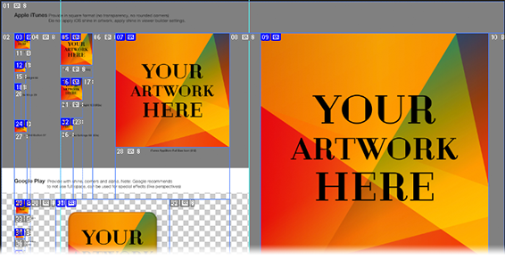
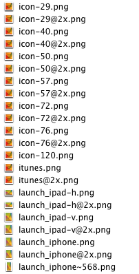

Template for creating App Icons & Launch Images for DPS Viewer Builder. Built for Photoshop CC
This project is maintained by Johannes Eckert
The two Photoshop files (one for iOS, one for Android) are set up and ready to use with your own artwork. Simply change the smart object with your own artwork and activate Adobe Generator.
Simply open one of the icon smart objects and place your artwork or go one level deeper and open the vector artwork in Illustrator.
Launch Images are smart object each of their own.
Simply Close & Save the smart object and return to the main document and all sizes are being updated.
If you want to make a specific change to one of the sizes, you can de-couple the icon by choosing »New Smart Object via copy«.

To activate Adobe Generator in Photoshop CC:
File > Generate > Image Assets.
Each time you save the main document generator will create the assets in a subfolder next to the PSD. You can change the name or type of generated asset by simply renaming the layer.
Adobe Generator is part of Adobe Photoshop CC. Make sure to have the latest update of Photoshop CC that will contain the generator. Learn more about Adobe Generator.
Simply hit the download button on the right.
This is brought to you by Johannes Eckert
Blog: digitalpublishing.tumblr.com
Webseite: nordsueddesign.de
Follow me on twitter: twitter.com/frischmilch
Please note that this template is under UnLicence (http://unlicense.org/) and can be used commercially or however you want.